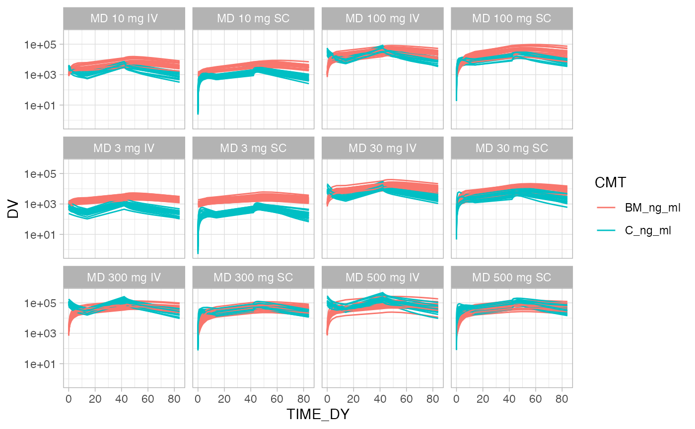
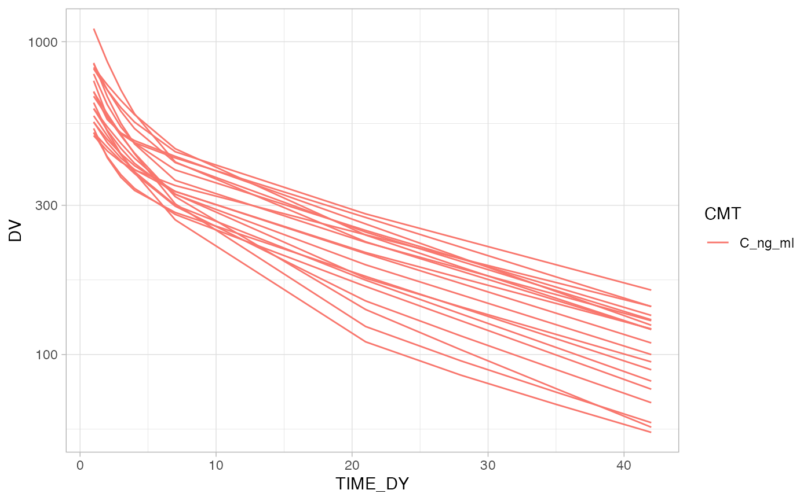
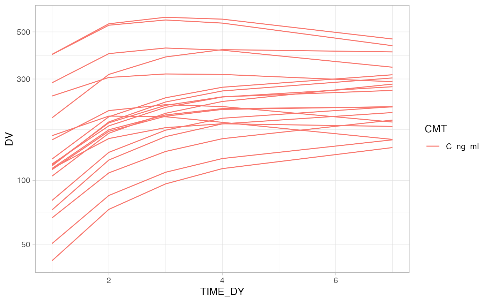
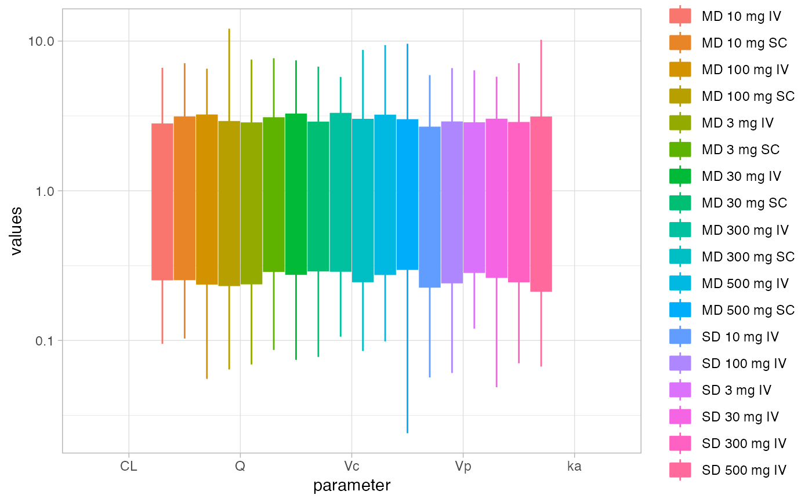

Merges default app options with the changes made in the UI
Usage
FG_fetch_state(
id,
input,
session,
FM_yaml_file,
MOD_yaml_file,
id_ASM = NULL,
id_UD = NULL,
id_DW = NULL,
react_state
)Arguments
- id
Shiny module ID
- input
Shiny input variable
- session
Shiny session variable
- FM_yaml_file
App configuration file with FM as main section.
- MOD_yaml_file
Module configuration file with MC as main section.
- id_ASM
ID string for the app state management module used to save and load app states
- id_UD
ID string for the upload data module used to handle uploads or the name of the list element in react_state where the data set is stored.
- id_DW
ID string for the data wrangling module to process any uploaded data
- react_state
Variable passed to server to allow reaction outside of module (
NULL)
Value
list containing the current state of the app including default values from the yaml file as well as any changes made by the user. The structure of the list is defined below:
yaml: Contents of the yaml file.
MC: Module components of the yaml file.
FG: Data wrangling state
isgood: Boolean status of the state. Currently just TRUE
button_counters: List of counters to detect button clicks.
ui_msg: Message returned when users perform actions.
ui: Current value of form elements in the UI.
ui_ids: Vector of UI elements for the module.
ui_hold: List of hold elements to disable updates before a full ui referesh is complete.
checksum: checksum of the FG module used to detect changes in the module.
aes_elements: Plot elements defined by aesthetics (i.e. the X in geom_X)
current_fig: fig_id of the currently figure.
fig_cntr: Counter for figures, incremented each time a new figure is created.
DSV: Available data sets from the UD and DW modules.
figs: List of figures. Each view has the following structure:
add_isgood: JMH
checksum: Checksum of the figure used to detect changes in the figure.
code: Code to generate figure from start to finish.
code_fg_only: Code to just generate the figure.
code_previous: Code to load and/or wrangle the dataset.
elements_table: Table of figure generation elements.
fg_object_name: JMH
fig_dsview: Name of the dataset view for the current figure (also the R object name of the dataset view).
fobj: JMH
id: Character id (
fig_idx)idx: Numeric id (
1)isgood: Boolean status of the figure. FALSE if evaluation/build fails.
key: Figure key acts as a title/caption (user editable)
msgs: JMH
notes: Figure notes (user editable)
num_pages: JMH
page: JMH
MOD_TYPE: Character data containing the type of module
"DW"id: Character data containing the module id module in the session variable.
FM_yaml_file: App configuration file with FM as main section.
MOD_yaml_file: Module configuration file with MC as main section.
Examples
# Within shiny both session and input variables will exist,
# this creates examples here for testing purposes:
sess_res = FG_test_mksession(session=list())
#> → UD: including file
#> → UD: source: file.path(system.file(package="onbrand"), "templates", "report.docx")
#> → UD: dest: file.path("config","report.docx")
#> → UD: including file
#> → UD: source: file.path(system.file(package="onbrand"), "templates", "report.pptx")
#> → UD: dest: file.path("config","report.pptx")
#> → UD: including file
#> → UD: source: file.path(system.file(package="onbrand"), "templates", "report.yaml")
#> → UD: dest: file.path("config","report.yaml")
#> → UD: State initialized
#> → UD: module checksum updated:897d952fecbc804999396a96f9df4b20
#> → DW: including file
#> → DW: source: file.path(system.file(package="onbrand"), "templates", "report.docx")
#> → DW: dest: file.path("config","report.docx")
#> → DW: including file
#> → DW: source: file.path(system.file(package="onbrand"), "templates", "report.pptx")
#> → DW: dest: file.path("config","report.pptx")
#> → DW: including file
#> → DW: source: file.path(system.file(package="onbrand"), "templates", "report.yaml")
#> → DW: dest: file.path("config","report.yaml")
#> → DW: State initialized
#> → DW: module checksum updated:5b0f0b05ee3ac7336a74c564bb6efdad
#> → DW: module checksum updated:65801ab4b3c645aabf7edf91fc2f0d2c
#> → DW: module checksum updated:7fb2dd3b16b1780c4c24f64d658dd7c7
#> → DW: module checksum updated:5ab04ea00be44c0040695a4ed6243c90
#> → DW: module checksum updated:960db107cfe9db93578f79f0ae6283e2
#> → DW: module checksum updated:f0b5d122dcb04f207cba233253b61c4b
#> → DW: module checksum updated:189ed77a84bd9fcdd7b26abff8bea34a
#> → DW: module checksum updated:669ec77d50652669cd3fcfd949469b37
#> → DW: module checksum updated:dd6cafa0be3b6b195d230a11e9f07f9f
#> → DW: module checksum updated:5c2022c376ca8f56b839347156559890
#> → DW: module checksum updated:43640500a04674debd8e2399056c384a
#> → DW: module checksum updated:f81c45ac1ef4e7b43153d8c8eaf7aed6
#> → DW: module checksum updated:207cde891d98e20c4afbb7fb5fb0aba2
#> → DW: module checksum updated:0a673e81c01cbbf33533dd65d6baf9e3
#> → DW: module checksum updated:af3f3aefd0115ed9dfdd4d6ef9d5182f
#> → DW: module checksum updated:b0ccaee21e859322df0bf79d00c4b347
#> → DW: module checksum updated:2d3d6e9e38be6dea813b2d4d679e34b5
#> → DW: module checksum updated:2b60dd49b48a4e65200dc7241ad270e3
#> → DW: module checksum updated:3c92f397181a4fcdbdf2bd7dd7425e77
#> → DW: module checksum updated:92b81d7573def603649370b87c123b55
#> → DW: module checksum updated:9210264aabc0339e832b0c6bcfda32af
#> → DW: module checksum updated:fe62fde1e7e738a1a35c479de9d5007b
#> → DW: module checksum updated:ff3edcd4c1e58c96ea2707361916ffbc
#> → DW: module checksum updated:b6cdfcef0432c5d9b1fa2bd46122ffa2
#> → DW: module checksum updated:4fa4283f1fd8fd6cf6e6e7df0669723a
#> → DW: module checksum updated:cf3e139cef554b2d09dca619ee6aff41
#> → DW: module checksum updated:a9154d91a9e4b5d21f9585a6f68dd083
#> → DW: module checksum updated:4b5c6ad66658ddfa92d10ae1b0b7afa8
#> → DW: module checksum updated:591ac875a490b66a1fa7f4e7d4ba1c62
#> → DW: module checksum updated:afa3ca309cc3e6a48f542f4e8eadd54a
#> → DW: module checksum updated:5c918dd4f53a4f1e56115abb09c4f332
#> → DW: module checksum updated:159ddf8c8cd26b178dfda5434bbecfa1
#> → DW: module checksum updated:8bb3c97e700998f2f73353189bd07831
#> → DW: module checksum updated:a1eceffec3ff7d9f9961683b3d07088b
#> → FG: including file
#> → FG: source: file.path(system.file(package="onbrand"), "templates", "report.docx")
#> → FG: dest: file.path("config","report.docx")
#> → FG: including file
#> → FG: source: file.path(system.file(package="onbrand"), "templates", "report.pptx")
#> → FG: dest: file.path("config","report.pptx")
#> → FG: including file
#> → FG: source: file.path(system.file(package="onbrand"), "templates", "report.yaml")
#> → FG: dest: file.path("config","report.yaml")
#> → FG: State initialized
#> → FG: module checksum updated:6201bcc0b3e82efebe08bebaf28a96de
#> → FG: module checksum updated:35492612449d2c29eb6d4c29dfb58ff2
#> → FG: module checksum updated:ccaa27f90c1fdb6fbb2ca517026699ee
#> → FG: module checksum updated:9a1b37fcb639f32a40c45ef2165f1870
#> → FG: module checksum updated:ca39cf5cf0b880399645643f77fe6de8
#> → FG: module checksum updated:b1fd55bbff0cd5832dbba5b7b6b96976
#> → FG: module checksum updated:9c85d6bb1d95e51801e2d597a9ab6bee
#> → FG: module checksum updated:aab7eb0370c75b8f7bf74c629e87cdfb
#> → FG: module checksum updated:74736faedc68c2c3bd198fdd8949d872
#> → FG: module checksum updated:6a349943a9bcbfc08eb852d6e36647ff
#> → FG: module checksum updated:e3e96c7f6daf3ef1cbab42c5fa1543f6
#> → FG: module checksum updated:8213f87aee841e6f25172e37fba62ab5
#> → FG: module checksum updated:a545e926ce0cc3e170f98f05278cbcf1
session = sess_res$session
input = sess_res$input
# Configuration files
FM_yaml_file = system.file(package = "formods", "templates", "formods.yaml")
MOD_yaml_file = system.file(package = "formods", "templates", "FG.yaml")
# We need to specify both the FG module id as well as the
# id of the UD module that feeds into it.
id = "FG"
id_UD = "UD"
id_DW = "DW"
# Creating an empty state object
state = FG_fetch_state(id = id,
input = input,
session = session,
FM_yaml_file = FM_yaml_file,
MOD_yaml_file = MOD_yaml_file,
id_UD = id_UD,
id_DW = id_DW,
react_state = NULL)
state
#> $yaml
#> $yaml$FM
#> $yaml$FM$include
#> $yaml$FM$include$files
#> $yaml$FM$include$files[[1]]
#> $yaml$FM$include$files[[1]]$file
#> $yaml$FM$include$files[[1]]$file$source
#> [1] "file.path(system.file(package=\"onbrand\"), \"templates\", \"report.docx\")"
#>
#> $yaml$FM$include$files[[1]]$file$dest
#> [1] "file.path(\"config\",\"report.docx\")"
#>
#>
#>
#> $yaml$FM$include$files[[2]]
#> $yaml$FM$include$files[[2]]$file
#> $yaml$FM$include$files[[2]]$file$source
#> [1] "file.path(system.file(package=\"onbrand\"), \"templates\", \"report.pptx\")"
#>
#> $yaml$FM$include$files[[2]]$file$dest
#> [1] "file.path(\"config\",\"report.pptx\")"
#>
#>
#>
#> $yaml$FM$include$files[[3]]
#> $yaml$FM$include$files[[3]]$file
#> $yaml$FM$include$files[[3]]$file$source
#> [1] "file.path(system.file(package=\"onbrand\"), \"templates\", \"report.yaml\")"
#>
#> $yaml$FM$include$files[[3]]$file$dest
#> [1] "file.path(\"config\",\"report.yaml\")"
#>
#>
#>
#>
#>
#> $yaml$FM$deployed
#> [1] FALSE
#>
#> $yaml$FM$code
#> $yaml$FM$code$theme
#> [1] "vibrant_ink"
#>
#> $yaml$FM$code$showLineNumbers
#> [1] TRUE
#>
#> $yaml$FM$code$gen_file
#> [1] "run_analysis.R"
#>
#> $yaml$FM$code$gen_preamble
#> [1] "# formods automated output ------------------------------------------------\n# https://formods.ubiquity.tools/\nrm(list=ls())"
#>
#> $yaml$FM$code$packages
#> [1] "onbrand" "writexl"
#>
#>
#> $yaml$FM$notifications
#> $yaml$FM$notifications$config
#> $yaml$FM$notifications$config$success
#> $yaml$FM$notifications$config$success$useFontAwesome
#> [1] FALSE
#>
#> $yaml$FM$notifications$config$success$useIcon
#> [1] FALSE
#>
#> $yaml$FM$notifications$config$success$background
#> [1] "#5bb85b"
#>
#>
#> $yaml$FM$notifications$config$failure
#> $yaml$FM$notifications$config$failure$useFontAwesome
#> [1] FALSE
#>
#> $yaml$FM$notifications$config$failure$useIcon
#> [1] FALSE
#>
#> $yaml$FM$notifications$config$failure$background
#> [1] "#d9534f"
#>
#>
#> $yaml$FM$notifications$config$info
#> $yaml$FM$notifications$config$info$useFontAwesome
#> [1] FALSE
#>
#> $yaml$FM$notifications$config$info$useIcon
#> [1] FALSE
#>
#> $yaml$FM$notifications$config$info$background
#> [1] "#5bc0de"
#>
#>
#> $yaml$FM$notifications$config$warning
#> $yaml$FM$notifications$config$warning$useFontAwesome
#> [1] FALSE
#>
#> $yaml$FM$notifications$config$warning$useIcon
#> [1] FALSE
#>
#> $yaml$FM$notifications$config$warning$background
#> [1] "#f0ac4d"
#>
#>
#>
#>
#> $yaml$FM$reporting
#> $yaml$FM$reporting$enabled
#> [1] TRUE
#>
#> $yaml$FM$reporting$content_init
#> $yaml$FM$reporting$content_init$xlsx
#> [1] "rpt = list(summary = NULL,\n sheets = list())"
#>
#> $yaml$FM$reporting$content_init$docx
#> [1] "rpt = onbrand::read_template(\n template = file.path(\"config\", \"report.docx\"),\n mapping = file.path(\"config\", \"report.yaml\"))"
#>
#> $yaml$FM$reporting$content_init$pptx
#> [1] "rpt = onbrand::read_template(\n template = file.path(\"config\", \"report.pptx\"),\n mapping = file.path(\"config\", \"report.yaml\"))"
#>
#>
#>
#> $yaml$FM$ui
#> $yaml$FM$ui$button_style
#> [1] "fill"
#>
#> $yaml$FM$ui$select_size
#> [1] 10
#>
#> $yaml$FM$ui$color_green
#> [1] "#00BB8A"
#>
#> $yaml$FM$ui$color_red
#> [1] "#FF475E"
#>
#> $yaml$FM$ui$color_blue
#> [1] "#0088FF"
#>
#> $yaml$FM$ui$color_purple
#> [1] "#bd2cf4"
#>
#>
#> $yaml$FM$data_meta
#> $yaml$FM$data_meta$data_header
#> [1] "<span style='color:===COLOR==='><b>===NAME===</b><br/><font size='-3'>===LABEL===</font></span>"
#>
#> $yaml$FM$data_meta$subtext
#> [1] "===LABEL===: ===RANGE==="
#>
#> $yaml$FM$data_meta$many_sep
#> [1] ",⋅⋅⋅,"
#>
#> $yaml$FM$data_meta$data_types
#> $yaml$FM$data_meta$data_types$character
#> $yaml$FM$data_meta$data_types$character$color
#> [1] "#DD4B39"
#>
#> $yaml$FM$data_meta$data_types$character$label
#> [1] "text"
#>
#>
#> $yaml$FM$data_meta$data_types$double
#> $yaml$FM$data_meta$data_types$double$color
#> [1] "#3C8DBC"
#>
#> $yaml$FM$data_meta$data_types$double$label
#> [1] "num"
#>
#>
#> $yaml$FM$data_meta$data_types$integer
#> $yaml$FM$data_meta$data_types$integer$color
#> [1] "#3C8DBC"
#>
#> $yaml$FM$data_meta$data_types$integer$label
#> [1] "num"
#>
#>
#> $yaml$FM$data_meta$data_types$other
#> $yaml$FM$data_meta$data_types$other$color
#> [1] "black"
#>
#> $yaml$FM$data_meta$data_types$other$label
#> [1] "other"
#>
#>
#>
#>
#> $yaml$FM$labels
#> $yaml$FM$labels$default_ds
#> [1] "Original data set"
#>
#>
#> $yaml$FM$user_files
#> $yaml$FM$user_files$use_tmpdir
#> [1] TRUE
#>
#>
#> $yaml$FM$logging
#> $yaml$FM$logging$enabled
#> [1] TRUE
#>
#> $yaml$FM$logging$timestamp
#> [1] TRUE
#>
#> $yaml$FM$logging$timestamp_fmt
#> [1] "%Y-%m-%d %H:%M:%S"
#>
#> $yaml$FM$logging$log_file
#> [1] "formods_log.txt"
#>
#> $yaml$FM$logging$console
#> [1] TRUE
#>
#>
#>
#>
#> $MC
#> $MC$compact
#> $MC$compact$code
#> [1] TRUE
#>
#> $MC$compact$preview
#> [1] "ggplot"
#>
#> $MC$compact$clip
#> [1] TRUE
#>
#>
#> $MC$reporting
#> $MC$reporting$enabled
#> [1] TRUE
#>
#> $MC$reporting$priority
#> [1] 1
#>
#>
#> $MC$tooltips
#> $MC$tooltips$include
#> [1] TRUE
#>
#> $MC$tooltips$components
#> $MC$tooltips$components$manual
#> $MC$tooltips$components$manual$x
#> [1] "Numeric location on the x-axis"
#>
#> $MC$tooltips$components$manual$y
#> [1] "Numeric location on the y-axis"
#>
#> $MC$tooltips$components$manual$color
#> [1] "A named color red, blue, green"
#>
#> $MC$tooltips$components$manual$linetype
#> [1] "Specify either solid, dashed, dotted, dotdash, longdash or twodash"
#>
#> $MC$tooltips$components$manual$shape
#> [1] "Open shapes: square (0), circle (1), triangle (2); Filled shapes: square (15), circle (16), triangle (17)"
#>
#> $MC$tooltips$components$manual$size
#> [1] "Numeric value"
#>
#> $MC$tooltips$components$manual$alpha
#> [1] "Numeric value between 0 (completely transparent) and 1 (solid)"
#>
#> $MC$tooltips$components$manual$group
#> NULL
#>
#> $MC$tooltips$components$manual$xintercept
#> NULL
#>
#> $MC$tooltips$components$manual$yintercept
#> NULL
#>
#>
#>
#> $MC$tooltips$ph
#> $MC$tooltips$ph$notes
#> [1] "Optional figure notes that will be carried over and used in other elements (e.g. reporting)."
#>
#> $MC$tooltips$ph$fig_key
#> [1] "Unique description used for referencing figures and in other elements (e.g. reporting)."
#>
#>
#> $MC$tooltips$show_code
#> [1] "Show figure generation code"
#>
#> $MC$tooltips$fg_elements
#> [1] "Current figure elements"
#>
#>
#> $MC$labels
#> $MC$labels$components
#> $MC$labels$components$x
#> [1] "x-axis"
#>
#> $MC$labels$components$y
#> [1] "y-axis"
#>
#> $MC$labels$components$color
#> [1] "color"
#>
#> $MC$labels$components$linetype
#> [1] "line type"
#>
#> $MC$labels$components$fill
#> [1] "fill color"
#>
#> $MC$labels$components$weight
#> [1] "weight"
#>
#> $MC$labels$components$ymin
#> [1] "ymin"
#>
#> $MC$labels$components$ymax
#> [1] "ymax"
#>
#> $MC$labels$components$lower
#> [1] "lower"
#>
#> $MC$labels$components$middle
#> [1] "middle"
#>
#> $MC$labels$components$upper
#> [1] "upper"
#>
#> $MC$labels$components$shape
#> [1] "shape"
#>
#> $MC$labels$components$size
#> [1] "size"
#>
#> $MC$labels$components$alpha
#> [1] "transparency"
#>
#> $MC$labels$components$group
#> [1] "group"
#>
#> $MC$labels$components$xintercept
#> [1] "x intercept"
#>
#> $MC$labels$components$yintercept
#> [1] "y intercept"
#>
#> $MC$labels$components$yscale
#> [1] "y-scale"
#>
#> $MC$labels$components$xscale
#> [1] "x-scale"
#>
#> $MC$labels$components$ylim
#> [1] "y limits"
#>
#> $MC$labels$components$xlim
#> [1] "x limits"
#>
#>
#> $MC$labels$ph
#> $MC$labels$ph$xlab
#> [1] "x-axis label"
#>
#> $MC$labels$ph$ylab
#> [1] "y-axis label"
#>
#> $MC$labels$ph$ggtitle
#> [1] "plot title"
#>
#> $MC$labels$ph$notes
#> [1] "optional notes here"
#>
#> $MC$labels$ph$fig_key
#> [1] "title/caption"
#>
#> $MC$labels$ph$manual
#> [1] "Manual"
#>
#> $MC$labels$ph$axlim
#> [1] "0.1, 1000 # Empty for auto"
#>
#>
#> $MC$labels$manual
#> [1] "Manual"
#>
#> $MC$labels$not_used
#> [1] "Not Used"
#>
#> $MC$labels$curr_figs_none
#> [1] "No figures yet created"
#>
#> $MC$labels$no_fig_elements
#> [1] "Add figure elements"
#>
#> $MC$labels$new_fig
#> [1] "New"
#>
#> $MC$labels$save_fig
#> [1] "Save"
#>
#> $MC$labels$del_fig
#> [1] "Delete"
#>
#> $MC$labels$copy_fig
#> [1] "Copy"
#>
#> $MC$labels$clip_fig
#> [1] "Code"
#>
#> $MC$labels$upds_fig
#> [1] "Data set"
#>
#> $MC$labels$add_ele
#> [1] "Add Figure Element"
#>
#> $MC$labels$msg_bad_label
#> [1] "No labels were specified, unable to add element."
#>
#> $MC$labels$msg_bad_facet
#> [1] "At least one column must be selected to add a faceting element."
#>
#> $MC$labels$msg_bad_element
#> [1] "Unable to add the specified element: ===ELEMENT==="
#>
#> $MC$labels$msg_bad_manual_comp
#> [1] "The plot element component ===COMP=== was specified manually but \nno manual value was provided."
#>
#> $MC$labels$select_current_fig
#> [1] "Current figure"
#>
#> $MC$labels$select_current_view
#> [1] "Data from"
#>
#> $MC$labels$no_figures_defined
#> [1] "No figures have been defined. There are no data sources to create figures. You need to load data and create data views to use this module."
#>
#> $MC$labels$busy
#> $MC$labels$busy$fig_update
#> [1] "Updating the current figure. Please be patient..."
#>
#>
#>
#> $MC$errors
#> $MC$errors$element_not_added
#> [1] "Unable to add the data figure element:"
#>
#> $MC$errors$current_key_empty
#> [1] "The figure description field cannot be empty."
#>
#> $MC$errors$only_one_element
#> [1] "Only one element of ===ELEMENT=== type is allowed. The old ===ELEMENT=== will be replaced."
#>
#>
#> $MC$elements
#> $MC$elements$line
#> $MC$elements$line$choice
#> [1] "Line"
#>
#> $MC$elements$line$subtext
#> [1] "Continuous line"
#>
#> $MC$elements$line$ui_aes
#> [1] "x" "y" "color" "group" "linetype" "size" "alpha"
#>
#> $MC$elements$line$aes_req
#> [1] "x" "y"
#>
#> $MC$elements$line$fcn
#> [1] "geom_line"
#>
#>
#> $MC$elements$point
#> $MC$elements$point$choice
#> [1] "Point"
#>
#> $MC$elements$point$subtext
#> [1] "Scatter plot"
#>
#> $MC$elements$point$ui_aes
#> [1] "x" "y" "color" "group" "shape" "size" "alpha"
#>
#> $MC$elements$point$aes_req
#> [1] "x" "y"
#>
#> $MC$elements$point$fcn
#> [1] "geom_point"
#>
#>
#> $MC$elements$errorbar
#> $MC$elements$errorbar$choice
#> [1] "Errobar"
#>
#> $MC$elements$errorbar$subtext
#> [1] "Errorbars around points"
#>
#> $MC$elements$errorbar$ui_aes
#> [1] "x" "ymin" "ymax" "color" "group" "size" "alpha"
#>
#> $MC$elements$errorbar$aes_req
#> [1] "x" "ymin" "ymax"
#>
#> $MC$elements$errorbar$fcn
#> [1] "geom_errorbar"
#>
#>
#> $MC$elements$hguide
#> $MC$elements$hguide$choice
#> [1] "H-Guide"
#>
#> $MC$elements$hguide$subtext
#> [1] "Horizontal guide"
#>
#> $MC$elements$hguide$ui_aes
#> [1] "yintercept" "linetype" "color" "size"
#>
#> $MC$elements$hguide$aes_req
#> [1] "yintercept"
#>
#> $MC$elements$hguide$fcn
#> [1] "geom_hline"
#>
#>
#> $MC$elements$vguide
#> $MC$elements$vguide$choice
#> [1] "V-Guide"
#>
#> $MC$elements$vguide$subtext
#> [1] "Vertical guide"
#>
#> $MC$elements$vguide$ui_aes
#> [1] "xintercept" "linetype" "color" "size"
#>
#> $MC$elements$vguide$aes_req
#> [1] "xintercept"
#>
#> $MC$elements$vguide$fcn
#> [1] "geom_vline"
#>
#>
#> $MC$elements$facet
#> $MC$elements$facet$choice
#> [1] "Facet"
#>
#> $MC$elements$facet$subtext
#> [1] "Facet by one or more variables"
#>
#>
#> $MC$elements$label
#> $MC$elements$label$choice
#> [1] "Label"
#>
#> $MC$elements$label$subtext
#> [1] "Label axes or plot title"
#>
#> $MC$elements$label$ui_text
#> [1] "xlab" "ylab" "ggtitle"
#>
#>
#> $MC$elements$scales
#> $MC$elements$scales$choice
#> [1] "Format Axes"
#>
#> $MC$elements$scales$subtext
#> [1] "Axis scales and limits"
#>
#>
#> $MC$elements$smooth
#> $MC$elements$smooth$choice
#> [1] "Smooth Trend"
#>
#> $MC$elements$smooth$subtext
#> [1] "Smoothed conditional means"
#>
#> $MC$elements$smooth$ui_aes
#> [1] "x" "y" "color" "group" "fill" "weight"
#> [7] "linetype" "size" "alpha" "ymax" "ymin"
#>
#> $MC$elements$smooth$aes_req
#> [1] "x" "y"
#>
#> $MC$elements$smooth$fcn
#> [1] "geom_smooth"
#>
#>
#> $MC$elements$ribbon
#> $MC$elements$ribbon$choice
#> [1] "Shaded Area"
#>
#> $MC$elements$ribbon$subtext
#> [1] "Creating prediction intervals"
#>
#> $MC$elements$ribbon$ui_aes
#> [1] "x" "ymin" "ymax" "color" "group" "fill" "linetype"
#> [8] "size" "alpha"
#>
#> $MC$elements$ribbon$aes_req
#> [1] "x" "ymin" "ymax"
#>
#> $MC$elements$ribbon$fcn
#> [1] "geom_ribbon"
#>
#>
#> $MC$elements$boxplot
#> $MC$elements$boxplot$choice
#> [1] "Boxplot"
#>
#> $MC$elements$boxplot$subtext
#> [1] "Box and whiskers plot"
#>
#> $MC$elements$boxplot$ui_aes
#> [1] "x" "y" "lower" "middle" "upper" "ymin"
#> [7] "ymax" "color" "group" "fill" "weight" "linetype"
#> [13] "size" "shape" "alpha"
#>
#> $MC$elements$boxplot$aes_req
#> [1] "x" "y"
#>
#> $MC$elements$boxplot$fcn
#> [1] "geom_boxplot"
#>
#>
#>
#> $MC$formatting
#> $MC$formatting$code
#> $MC$formatting$code$width
#> [1] 800
#>
#> $MC$formatting$code$height
#> [1] 300
#>
#>
#> $MC$formatting$preview
#> $MC$formatting$preview$width
#> [1] 800
#>
#> $MC$formatting$preview$height
#> [1] 400
#>
#>
#> $MC$formatting$select_fg_page
#> $MC$formatting$select_fg_page$width
#> [1] 1000
#>
#>
#> $MC$formatting$notes
#> $MC$formatting$notes$width
#> [1] "560px"
#>
#> $MC$formatting$notes$height
#> [1] "75px"
#>
#>
#> $MC$formatting$components
#> $MC$formatting$components$aes
#> $MC$formatting$components$aes$width
#> [1] "100px"
#>
#>
#> $MC$formatting$components$facet
#> $MC$formatting$components$facet$width
#> [1] "200px"
#>
#>
#> $MC$formatting$components$label
#> $MC$formatting$components$label$width
#> [1] "150px"
#>
#>
#> $MC$formatting$components$axscale
#> $MC$formatting$components$axscale$width
#> [1] "150px"
#>
#>
#> $MC$formatting$components$axlim
#> $MC$formatting$components$axlim$width
#> [1] "150px"
#>
#>
#>
#> $MC$formatting$select_current_fig
#> $MC$formatting$select_current_fig$width
#> [1] 200
#>
#>
#> $MC$formatting$select_current_view
#> $MC$formatting$select_current_view$width
#> [1] 200
#>
#>
#> $MC$formatting$fg_elements
#> $MC$formatting$fg_elements$width
#> [1] 600
#>
#> $MC$formatting$fg_elements$height
#> [1] 200
#>
#>
#> $MC$formatting$faceting
#> $MC$formatting$faceting$nrow
#> [1] 3
#>
#> $MC$formatting$faceting$ncol
#> [1] 4
#>
#>
#> $MC$formatting$button_fig_del
#> $MC$formatting$button_fig_del$size
#> [1] "sm"
#>
#> $MC$formatting$button_fig_del$block
#> [1] TRUE
#>
#> $MC$formatting$button_fig_del$tooltip
#> [1] "Delete the current figure."
#>
#> $MC$formatting$button_fig_del$tooltip_position
#> [1] "right"
#>
#>
#> $MC$formatting$button_fig_save
#> $MC$formatting$button_fig_save$size
#> [1] "sm"
#>
#> $MC$formatting$button_fig_save$block
#> [1] TRUE
#>
#> $MC$formatting$button_fig_save$tooltip
#> [1] "Save changes to caption, notes and data source."
#>
#> $MC$formatting$button_fig_save$tooltip_position
#> [1] "right"
#>
#>
#> $MC$formatting$button_fig_clip
#> $MC$formatting$button_fig_clip$size
#> [1] "sm"
#>
#> $MC$formatting$button_fig_clip$block
#> [1] TRUE
#>
#> $MC$formatting$button_fig_clip$tooltip
#> [1] "Copy code to generate current figure to the clipboard."
#>
#> $MC$formatting$button_fig_clip$tooltip_position
#> [1] "right"
#>
#>
#> $MC$formatting$button_fig_copy
#> $MC$formatting$button_fig_copy$size
#> [1] "sm"
#>
#> $MC$formatting$button_fig_copy$block
#> [1] TRUE
#>
#> $MC$formatting$button_fig_copy$tooltip
#> [1] "Copy current figure to a new figure."
#>
#> $MC$formatting$button_fig_copy$tooltip_position
#> [1] "right"
#>
#>
#> $MC$formatting$button_fig_new
#> $MC$formatting$button_fig_new$size
#> [1] "sm"
#>
#> $MC$formatting$button_fig_new$block
#> [1] TRUE
#>
#> $MC$formatting$button_fig_new$tooltip
#> [1] "Create a new empty figure."
#>
#> $MC$formatting$button_fig_new$tooltip_position
#> [1] "right"
#>
#>
#> $MC$formatting$button_fig_add
#> $MC$formatting$button_fig_add$size
#> [1] "sm"
#>
#> $MC$formatting$button_fig_add$block
#> [1] TRUE
#>
#>
#>
#> $MC$post_processing
#> [1] "===FGOBJ=== = ===FGOBJ=== + ggplot2::theme_light()"
#>
#> $MC$fg_object_name
#> [1] "myp"
#>
#> $MC$code
#> $MC$code$packages
#> [1] "ggplot2" "ggforce"
#>
#> $MC$code$readOnly
#> [1] TRUE
#>
#> $MC$code$mode
#> [1] "r"
#>
#> $MC$code$preamble
#> [1] "# Generating figures ------------------------------------------------------"
#>
#>
#>
#> $FG
#> $FG$button_counters
#> $FG$button_counters$button_element_add
#> [1] 0
#>
#> $FG$button_counters$button_fig_save
#> [1] 0
#>
#> $FG$button_counters$button_fig_new
#> [1] 0
#>
#> $FG$button_counters$button_fig_del
#> [1] 0
#>
#> $FG$button_counters$button_fig_copy
#> [1] 0
#>
#>
#> $FG$ui_hold
#> $FG$ui_hold$hot_fg_elements
#> [1] FALSE
#>
#> $FG$ui_hold$text_fig_key
#> [1] FALSE
#>
#> $FG$ui_hold$text_fig_notes
#> [1] FALSE
#>
#> $FG$ui_hold$select_current_view
#> [1] FALSE
#>
#> $FG$ui_hold$select_current_fig
#> [1] FALSE
#>
#>
#> $FG$ui_ids
#> [1] "select_component_x" "select_component_y"
#> [3] "select_component_color" "select_component_group"
#> [5] "select_component_linetype" "select_component_size"
#> [7] "select_component_alpha" "text_component_x_manual"
#> [9] "text_component_y_manual" "text_component_color_manual"
#> [11] "text_component_group_manual" "text_component_linetype_manual"
#> [13] "text_component_size_manual" "text_component_alpha_manual"
#> [15] "select_component_shape" "text_component_shape_manual"
#> [17] "select_component_ymin" "select_component_ymax"
#> [19] "text_component_ymin_manual" "text_component_ymax_manual"
#> [21] "select_component_yintercept" "text_component_yintercept_manual"
#> [23] "select_component_xintercept" "text_component_xintercept_manual"
#> [25] "select_component_fill" "select_component_weight"
#> [27] "text_component_fill_manual" "text_component_weight_manual"
#> [29] "select_component_lower" "select_component_middle"
#> [31] "select_component_upper" "text_component_lower_manual"
#> [33] "text_component_middle_manual" "text_component_upper_manual"
#> [35] "button_fig_new" "button_fig_save"
#> [37] "button_fig_del" "button_fig_copy"
#> [39] "button_element_add" "hot_fg_elements"
#> [41] "text_fig_key" "text_fig_notes"
#> [43] "text_component_xlab" "text_component_ylab"
#> [45] "text_component_xlim" "text_component_ylim"
#> [47] "text_component_ggtitle" "select_fg_page"
#> [49] "select_current_fig" "select_current_view"
#> [51] "select_component_facet" "select_component_xscale"
#> [53] "select_component_yscale" "select_fg_element"
#>
#> $FG$isgood
#> [1] TRUE
#>
#> $FG$DSV
#> $FG$DSV$isgood
#> [1] TRUE
#>
#> $FG$DSV$hasds
#> [1] TRUE
#>
#> $FG$DSV$catalog
#> label object MOD_TYPE id
#> 1 Original data set myDS UD UD
#> 2 Observations DW_myDS_1 DW DW
#> 3 PK 3mg SD IV DW_myDS_2 DW DW
#> 4 PK 3mg MD SC (first dose) DW_myDS_3 DW DW
#> 5 Parameters DW_myDS_4 DW DW
#> 6 PK/PD 3mg SD IV w/BQL DW_myDS_5 DW DW
#> 7 PK/PD 3mg MD SC (first dose) w/BQL DW_myDS_6 DW DW
#> 8 PK 3mg SD IV w/BQL DW_myDS_7 DW DW
#> 9 PK 3mg SD IV w/BQL w/dosing DW_myDS_8 DW DW
#> checksum DSchecksum
#> 1 897d952fecbc804999396a96f9df4b20 897d952fecbc804999396a96f9df4b20
#> 2 a1eceffec3ff7d9f9961683b3d07088b cb29ad3409843925da16295fa345c326
#> 3 a1eceffec3ff7d9f9961683b3d07088b 5d4cc8acd24c561e39dd4c44c9be500e
#> 4 a1eceffec3ff7d9f9961683b3d07088b c6b602ca14709080d7149350f51f7e8c
#> 5 a1eceffec3ff7d9f9961683b3d07088b 24cd058c982ef9a016c4ecdc3191ed00
#> 6 a1eceffec3ff7d9f9961683b3d07088b e983eb3141e34f59e6e3262ef436f534
#> 7 a1eceffec3ff7d9f9961683b3d07088b f118294a4123d818049797b2fd186006
#> 8 a1eceffec3ff7d9f9961683b3d07088b ab5246b6f6a91ce255ec054b4647886e
#> 9 a1eceffec3ff7d9f9961683b3d07088b 8fec3cb83af2b75cda446b742acbf362
#> code
#> 1 myDS = readxl::read_excel(path="TEST_DATA.xlsx", sheet="DATA")\nmyDS = janitor::clean_names(myDS, case="none")
#> 2 # Loading data\nmyDS = readxl::read_excel(path="TEST_DATA.xlsx", sheet="DATA")\nmyDS = janitor::clean_names(myDS, case="none")\nDW_myDS_1 = myDS\n\n# Data wrangling\nDW_myDS_1 = dplyr::filter(DW_myDS_1,EVID == 0)\nDW_myDS_1 = dplyr::filter(DW_myDS_1,DV != 0)\nDW_myDS_1 = dplyr::mutate(DW_myDS_1,IDCMT = paste0(ID, ', ', CMT))
#> 3 # Loading data\nmyDS = readxl::read_excel(path="TEST_DATA.xlsx", sheet="DATA")\nmyDS = janitor::clean_names(myDS, case="none")\nDW_myDS_2 = myDS\n\n# Data wrangling\nDW_myDS_2 = dplyr::filter(DW_myDS_2,EVID == 0)\nDW_myDS_2 = dplyr::filter(DW_myDS_2,DV != 0)\nDW_myDS_2 = dplyr::filter(DW_myDS_2,Cohort %in% c("SD 3 mg IV"))\nDW_myDS_2 = dplyr::filter(DW_myDS_2,CMT %in% c("C_ng_ml"))
#> 4 # Loading data\nmyDS = readxl::read_excel(path="TEST_DATA.xlsx", sheet="DATA")\nmyDS = janitor::clean_names(myDS, case="none")\nDW_myDS_3 = myDS\n\n# Data wrangling\nDW_myDS_3 = dplyr::filter(DW_myDS_3,EVID == 0)\nDW_myDS_3 = dplyr::filter(DW_myDS_3,DV != 0)\nDW_myDS_3 = dplyr::filter(DW_myDS_3,Cohort %in% c("MD 3 mg SC"))\nDW_myDS_3 = dplyr::filter(DW_myDS_3,DOSE_NUM == 1)\nDW_myDS_3 = dplyr::filter(DW_myDS_3,CMT %in% c("C_ng_ml"))
#> 5 # Loading data\nmyDS = readxl::read_excel(path="TEST_DATA.xlsx", sheet="DATA")\nmyDS = janitor::clean_names(myDS, case="none")\nDW_myDS_4 = myDS\n\n# Data wrangling\nDW_myDS_4 = dplyr::group_by(DW_myDS_4,ID)\nDW_myDS_4 = dplyr::filter(DW_myDS_4,row_number()==1)\nDW_myDS_4 = dplyr::select(DW_myDS_4,ID, DOSE, DOSE_STR, Cohort, ROUTE, ka, CL, Vc, Vp, Q)\nDW_myDS_4 = tidyr::pivot_longer(DW_myDS_4, cols = c("ka", "CL", "Vc", "Vp", "Q"), names_to = "parameter", values_to = "values")
#> 6 # Loading data\nmyDS = readxl::read_excel(path="TEST_DATA.xlsx", sheet="DATA")\nmyDS = janitor::clean_names(myDS, case="none")\nDW_myDS_5 = myDS\n\n# Data wrangling\nDW_myDS_5 = dplyr::filter(DW_myDS_5,EVID == 0)\nDW_myDS_5 = dplyr::filter(DW_myDS_5,Cohort %in% c("SD 3 mg IV"))
#> 7 # Loading data\nmyDS = readxl::read_excel(path="TEST_DATA.xlsx", sheet="DATA")\nmyDS = janitor::clean_names(myDS, case="none")\nDW_myDS_6 = myDS\n\n# Data wrangling\nDW_myDS_6 = dplyr::filter(DW_myDS_6,EVID == 0)\nDW_myDS_6 = dplyr::filter(DW_myDS_6,Cohort %in% c("MD 3 mg SC"))\nDW_myDS_6 = dplyr::filter(DW_myDS_6,DOSE_NUM == 1)
#> 8 # Loading data\nmyDS = readxl::read_excel(path="TEST_DATA.xlsx", sheet="DATA")\nmyDS = janitor::clean_names(myDS, case="none")\nDW_myDS_7 = myDS\n\n# Data wrangling\nDW_myDS_7 = dplyr::filter(DW_myDS_7,EVID == 0)\nDW_myDS_7 = dplyr::filter(DW_myDS_7,Cohort %in% c("SD 3 mg IV"))\nDW_myDS_7 = dplyr::filter(DW_myDS_7,CMT %in% c("C_ng_ml"))
#> 9 # Loading data\nmyDS = readxl::read_excel(path="TEST_DATA.xlsx", sheet="DATA")\nmyDS = janitor::clean_names(myDS, case="none")\nDW_myDS_8 = myDS\n\n# Data wrangling\nDW_myDS_8 = dplyr::filter(DW_myDS_8,Cohort %in% c("MD 3 mg IV"))
#>
#> $FG$DSV$modules
#> $FG$DSV$modules$UD
#> $FG$DSV$modules$UD$UD
#> [1] "897d952fecbc804999396a96f9df4b20"
#>
#>
#> $FG$DSV$modules$DW
#> $FG$DSV$modules$DW$DW
#> [1] "a1eceffec3ff7d9f9961683b3d07088b"
#>
#>
#>
#> $FG$DSV$ds
#> $FG$DSV$ds$myDS
#> $FG$DSV$ds$myDS$label
#> [1] "Original data set"
#>
#> $FG$DSV$ds$myDS$MOD_TYPE
#> [1] "UD"
#>
#> $FG$DSV$ds$myDS$id
#> [1] "UD"
#>
#> $FG$DSV$ds$myDS$DS
#> # A tibble: 10,680 × 33
#> ID TIME_DY TIME_HR NTIME_DY NTIME_HR TIME AMT DV RECDESC DOSE
#> <dbl> <dbl> <dbl> <dbl> <dbl> <dbl> <dbl> <dbl> <chr> <dbl>
#> 1 1 0 0 0 0 0 3000000 0 dose 3000000
#> 2 1 0 0 0 0 0 0 1250 BM_ng_ml 3000000
#> 3 1 0 0 0 0 0 0 0 C_ng_ml 3000000
#> 4 1 1 24 1 24 24 0 1647 BM_ng_ml 3000000
#> 5 1 1 24 1 24 24 0 690. C_ng_ml 3000000
#> 6 1 2 48 2 48 48 0 1947 BM_ng_ml 3000000
#> 7 1 2 48 2 48 48 0 588. C_ng_ml 3000000
#> 8 1 3 72 3 72 72 0 2170 BM_ng_ml 3000000
#> 9 1 3 72 3 72 72 0 506. C_ng_ml 3000000
#> 10 1 4 96 4 96 96 0 2332 BM_ng_ml 3000000
#> # ℹ 10,670 more rows
#> # ℹ 23 more variables: DOSE_STR <chr>, Cohort <chr>, ROUTE <chr>, WT <dbl>,
#> # SUBTYPE <chr>, SEX <chr>, F1 <dbl>, ka <dbl>, CL <dbl>, Vc <dbl>, Vp <dbl>,
#> # Q <dbl>, BM_IC <dbl>, kdeg_BM <dbl>, Emax <dbl>, EC50 <dbl>, CMT <chr>,
#> # DUR <dbl>, EVID <dbl>, NDose <chr>, DOSE_NUM <dbl>, SUBTYPE_ID <dbl>,
#> # SEX_ID <dbl>
#>
#> $FG$DSV$ds$myDS$DSMETA
#> NULL
#>
#> $FG$DSV$ds$myDS$code
#> [1] "myDS = readxl::read_excel(path=\"TEST_DATA.xlsx\", sheet=\"DATA\")\nmyDS = janitor::clean_names(myDS, case=\"none\")"
#>
#> $FG$DSV$ds$myDS$checksum
#> [1] "897d952fecbc804999396a96f9df4b20"
#>
#> $FG$DSV$ds$myDS$DSchecksum
#> [1] "897d952fecbc804999396a96f9df4b20"
#>
#>
#> $FG$DSV$ds$DW_myDS_1
#> $FG$DSV$ds$DW_myDS_1$label
#> [1] "Observations"
#>
#> $FG$DSV$ds$DW_myDS_1$MOD_TYPE
#> [1] "DW"
#>
#> $FG$DSV$ds$DW_myDS_1$id
#> [1] "DW"
#>
#> $FG$DSV$ds$DW_myDS_1$DS
#> # A tibble: 9,240 × 34
#> ID TIME_DY TIME_HR NTIME_DY NTIME_HR TIME AMT DV RECDESC DOSE
#> <dbl> <dbl> <dbl> <dbl> <dbl> <dbl> <dbl> <dbl> <chr> <dbl>
#> 1 1 0 0 0 0 0 0 1250 BM_ng_ml 3000000
#> 2 1 1 24 1 24 24 0 1647 BM_ng_ml 3000000
#> 3 1 1 24 1 24 24 0 690. C_ng_ml 3000000
#> 4 1 2 48 2 48 48 0 1947 BM_ng_ml 3000000
#> 5 1 2 48 2 48 48 0 588. C_ng_ml 3000000
#> 6 1 3 72 3 72 72 0 2170 BM_ng_ml 3000000
#> 7 1 3 72 3 72 72 0 506. C_ng_ml 3000000
#> 8 1 4 96 4 96 96 0 2332 BM_ng_ml 3000000
#> 9 1 4 96 4 96 96 0 438. C_ng_ml 3000000
#> 10 1 7 168 7 168 168 0 2576 BM_ng_ml 3000000
#> # ℹ 9,230 more rows
#> # ℹ 24 more variables: DOSE_STR <chr>, Cohort <chr>, ROUTE <chr>, WT <dbl>,
#> # SUBTYPE <chr>, SEX <chr>, F1 <dbl>, ka <dbl>, CL <dbl>, Vc <dbl>, Vp <dbl>,
#> # Q <dbl>, BM_IC <dbl>, kdeg_BM <dbl>, Emax <dbl>, EC50 <dbl>, CMT <chr>,
#> # DUR <dbl>, EVID <dbl>, NDose <chr>, DOSE_NUM <dbl>, SUBTYPE_ID <dbl>,
#> # SEX_ID <dbl>, IDCMT <chr>
#>
#> $FG$DSV$ds$DW_myDS_1$DSMETA
#> NULL
#>
#> $FG$DSV$ds$DW_myDS_1$code
#> [1] "# Loading data\nmyDS = readxl::read_excel(path=\"TEST_DATA.xlsx\", sheet=\"DATA\")\nmyDS = janitor::clean_names(myDS, case=\"none\")\nDW_myDS_1 = myDS\n\n# Data wrangling\nDW_myDS_1 = dplyr::filter(DW_myDS_1,EVID == 0)\nDW_myDS_1 = dplyr::filter(DW_myDS_1,DV != 0)\nDW_myDS_1 = dplyr::mutate(DW_myDS_1,IDCMT = paste0(ID, ', ', CMT))"
#>
#> $FG$DSV$ds$DW_myDS_1$checksum
#> [1] "a1eceffec3ff7d9f9961683b3d07088b"
#>
#> $FG$DSV$ds$DW_myDS_1$DSchecksum
#> [1] "cb29ad3409843925da16295fa345c326"
#>
#>
#> $FG$DSV$ds$DW_myDS_2
#> $FG$DSV$ds$DW_myDS_2$label
#> [1] "PK 3mg SD IV"
#>
#> $FG$DSV$ds$DW_myDS_2$MOD_TYPE
#> [1] "DW"
#>
#> $FG$DSV$ds$DW_myDS_2$id
#> [1] "DW"
#>
#> $FG$DSV$ds$DW_myDS_2$DS
#> # A tibble: 180 × 33
#> ID TIME_DY TIME_HR NTIME_DY NTIME_HR TIME AMT DV RECDESC DOSE
#> <dbl> <dbl> <dbl> <dbl> <dbl> <dbl> <dbl> <dbl> <chr> <dbl>
#> 1 1 1 24 1 24 24 0 690. C_ng_ml 3000000
#> 2 1 2 48 2 48 48 0 588. C_ng_ml 3000000
#> 3 1 3 72 3 72 72 0 506. C_ng_ml 3000000
#> 4 1 4 96 4 96 96 0 438. C_ng_ml 3000000
#> 5 1 7 168 7 168 168 0 303. C_ng_ml 3000000
#> 6 1 21 504 21 504 504 0 123. C_ng_ml 3000000
#> 7 1 28 672 28 672 672 0 95.5 C_ng_ml 3000000
#> 8 1 35 840 35 840 840 0 75.8 C_ng_ml 3000000
#> 9 1 42 1008 42 1008 1008 0 60.6 C_ng_ml 3000000
#> 10 2 1 24 1 24 24 0 750. C_ng_ml 3000000
#> # ℹ 170 more rows
#> # ℹ 23 more variables: DOSE_STR <chr>, Cohort <chr>, ROUTE <chr>, WT <dbl>,
#> # SUBTYPE <chr>, SEX <chr>, F1 <dbl>, ka <dbl>, CL <dbl>, Vc <dbl>, Vp <dbl>,
#> # Q <dbl>, BM_IC <dbl>, kdeg_BM <dbl>, Emax <dbl>, EC50 <dbl>, CMT <chr>,
#> # DUR <dbl>, EVID <dbl>, NDose <chr>, DOSE_NUM <dbl>, SUBTYPE_ID <dbl>,
#> # SEX_ID <dbl>
#>
#> $FG$DSV$ds$DW_myDS_2$DSMETA
#> NULL
#>
#> $FG$DSV$ds$DW_myDS_2$code
#> [1] "# Loading data\nmyDS = readxl::read_excel(path=\"TEST_DATA.xlsx\", sheet=\"DATA\")\nmyDS = janitor::clean_names(myDS, case=\"none\")\nDW_myDS_2 = myDS\n\n# Data wrangling\nDW_myDS_2 = dplyr::filter(DW_myDS_2,EVID == 0)\nDW_myDS_2 = dplyr::filter(DW_myDS_2,DV != 0)\nDW_myDS_2 = dplyr::filter(DW_myDS_2,Cohort %in% c(\"SD 3 mg IV\"))\nDW_myDS_2 = dplyr::filter(DW_myDS_2,CMT %in% c(\"C_ng_ml\"))"
#>
#> $FG$DSV$ds$DW_myDS_2$checksum
#> [1] "a1eceffec3ff7d9f9961683b3d07088b"
#>
#> $FG$DSV$ds$DW_myDS_2$DSchecksum
#> [1] "5d4cc8acd24c561e39dd4c44c9be500e"
#>
#>
#> $FG$DSV$ds$DW_myDS_3
#> $FG$DSV$ds$DW_myDS_3$label
#> [1] "PK 3mg MD SC (first dose)"
#>
#> $FG$DSV$ds$DW_myDS_3$MOD_TYPE
#> [1] "DW"
#>
#> $FG$DSV$ds$DW_myDS_3$id
#> [1] "DW"
#>
#> $FG$DSV$ds$DW_myDS_3$DS
#> # A tibble: 100 × 33
#> ID TIME_DY TIME_HR NTIME_DY NTIME_HR TIME AMT DV RECDESC DOSE
#> <dbl> <dbl> <dbl> <dbl> <dbl> <dbl> <dbl> <dbl> <chr> <dbl>
#> 1 241 1 24 1 24 24 0 250. C_ng_ml 3000000
#> 2 241 2 48 2 48 48 0 305. C_ng_ml 3000000
#> 3 241 3 72 3 72 72 0 317. C_ng_ml 3000000
#> 4 241 4 96 4 96 96 0 315. C_ng_ml 3000000
#> 5 241 7 168 7 168 168 0 291. C_ng_ml 3000000
#> 6 242 1 24 1 24 24 0 126 C_ng_ml 3000000
#> 7 242 2 48 2 48 48 0 199. C_ng_ml 3000000
#> 8 242 3 72 3 72 72 0 245. C_ng_ml 3000000
#> 9 242 4 96 4 96 96 0 274. C_ng_ml 3000000
#> 10 242 7 168 7 168 168 0 314. C_ng_ml 3000000
#> # ℹ 90 more rows
#> # ℹ 23 more variables: DOSE_STR <chr>, Cohort <chr>, ROUTE <chr>, WT <dbl>,
#> # SUBTYPE <chr>, SEX <chr>, F1 <dbl>, ka <dbl>, CL <dbl>, Vc <dbl>, Vp <dbl>,
#> # Q <dbl>, BM_IC <dbl>, kdeg_BM <dbl>, Emax <dbl>, EC50 <dbl>, CMT <chr>,
#> # DUR <dbl>, EVID <dbl>, NDose <chr>, DOSE_NUM <dbl>, SUBTYPE_ID <dbl>,
#> # SEX_ID <dbl>
#>
#> $FG$DSV$ds$DW_myDS_3$DSMETA
#> NULL
#>
#> $FG$DSV$ds$DW_myDS_3$code
#> [1] "# Loading data\nmyDS = readxl::read_excel(path=\"TEST_DATA.xlsx\", sheet=\"DATA\")\nmyDS = janitor::clean_names(myDS, case=\"none\")\nDW_myDS_3 = myDS\n\n# Data wrangling\nDW_myDS_3 = dplyr::filter(DW_myDS_3,EVID == 0)\nDW_myDS_3 = dplyr::filter(DW_myDS_3,DV != 0)\nDW_myDS_3 = dplyr::filter(DW_myDS_3,Cohort %in% c(\"MD 3 mg SC\"))\nDW_myDS_3 = dplyr::filter(DW_myDS_3,DOSE_NUM == 1)\nDW_myDS_3 = dplyr::filter(DW_myDS_3,CMT %in% c(\"C_ng_ml\"))"
#>
#> $FG$DSV$ds$DW_myDS_3$checksum
#> [1] "a1eceffec3ff7d9f9961683b3d07088b"
#>
#> $FG$DSV$ds$DW_myDS_3$DSchecksum
#> [1] "c6b602ca14709080d7149350f51f7e8c"
#>
#>
#> $FG$DSV$ds$DW_myDS_4
#> $FG$DSV$ds$DW_myDS_4$label
#> [1] "Parameters"
#>
#> $FG$DSV$ds$DW_myDS_4$MOD_TYPE
#> [1] "DW"
#>
#> $FG$DSV$ds$DW_myDS_4$id
#> [1] "DW"
#>
#> $FG$DSV$ds$DW_myDS_4$DS
#> # A tibble: 1,800 × 7
#> # Groups: ID [360]
#> ID DOSE DOSE_STR Cohort ROUTE parameter values
#> <dbl> <dbl> <chr> <chr> <chr> <chr> <dbl>
#> 1 1 3000000 3 mg SD 3 mg IV IV ka 0.449
#> 2 1 3000000 3 mg SD 3 mg IV IV CL 0.25
#> 3 1 3000000 3 mg SD 3 mg IV IV Vc 3.67
#> 4 1 3000000 3 mg SD 3 mg IV IV Vp 3.77
#> 5 1 3000000 3 mg SD 3 mg IV IV Q 0.325
#> 6 2 3000000 3 mg SD 3 mg IV IV ka 0.408
#> 7 2 3000000 3 mg SD 3 mg IV IV CL 0.148
#> 8 2 3000000 3 mg SD 3 mg IV IV Vc 2.43
#> 9 2 3000000 3 mg SD 3 mg IV IV Vp 2.84
#> 10 2 3000000 3 mg SD 3 mg IV IV Q 1.31
#> # ℹ 1,790 more rows
#>
#> $FG$DSV$ds$DW_myDS_4$DSMETA
#> NULL
#>
#> $FG$DSV$ds$DW_myDS_4$code
#> [1] "# Loading data\nmyDS = readxl::read_excel(path=\"TEST_DATA.xlsx\", sheet=\"DATA\")\nmyDS = janitor::clean_names(myDS, case=\"none\")\nDW_myDS_4 = myDS\n\n# Data wrangling\nDW_myDS_4 = dplyr::group_by(DW_myDS_4,ID)\nDW_myDS_4 = dplyr::filter(DW_myDS_4,row_number()==1)\nDW_myDS_4 = dplyr::select(DW_myDS_4,ID, DOSE, DOSE_STR, Cohort, ROUTE, ka, CL, Vc, Vp, Q)\nDW_myDS_4 = tidyr::pivot_longer(DW_myDS_4, cols = c(\"ka\", \"CL\", \"Vc\", \"Vp\", \"Q\"), names_to = \"parameter\", values_to = \"values\")"
#>
#> $FG$DSV$ds$DW_myDS_4$checksum
#> [1] "a1eceffec3ff7d9f9961683b3d07088b"
#>
#> $FG$DSV$ds$DW_myDS_4$DSchecksum
#> [1] "24cd058c982ef9a016c4ecdc3191ed00"
#>
#>
#> $FG$DSV$ds$DW_myDS_5
#> $FG$DSV$ds$DW_myDS_5$label
#> [1] "PK/PD 3mg SD IV w/BQL"
#>
#> $FG$DSV$ds$DW_myDS_5$MOD_TYPE
#> [1] "DW"
#>
#> $FG$DSV$ds$DW_myDS_5$id
#> [1] "DW"
#>
#> $FG$DSV$ds$DW_myDS_5$DS
#> # A tibble: 400 × 33
#> ID TIME_DY TIME_HR NTIME_DY NTIME_HR TIME AMT DV RECDESC DOSE
#> <dbl> <dbl> <dbl> <dbl> <dbl> <dbl> <dbl> <dbl> <chr> <dbl>
#> 1 1 0 0 0 0 0 0 1250 BM_ng_ml 3000000
#> 2 1 0 0 0 0 0 0 0 C_ng_ml 3000000
#> 3 1 1 24 1 24 24 0 1647 BM_ng_ml 3000000
#> 4 1 1 24 1 24 24 0 690. C_ng_ml 3000000
#> 5 1 2 48 2 48 48 0 1947 BM_ng_ml 3000000
#> 6 1 2 48 2 48 48 0 588. C_ng_ml 3000000
#> 7 1 3 72 3 72 72 0 2170 BM_ng_ml 3000000
#> 8 1 3 72 3 72 72 0 506. C_ng_ml 3000000
#> 9 1 4 96 4 96 96 0 2332 BM_ng_ml 3000000
#> 10 1 4 96 4 96 96 0 438. C_ng_ml 3000000
#> # ℹ 390 more rows
#> # ℹ 23 more variables: DOSE_STR <chr>, Cohort <chr>, ROUTE <chr>, WT <dbl>,
#> # SUBTYPE <chr>, SEX <chr>, F1 <dbl>, ka <dbl>, CL <dbl>, Vc <dbl>, Vp <dbl>,
#> # Q <dbl>, BM_IC <dbl>, kdeg_BM <dbl>, Emax <dbl>, EC50 <dbl>, CMT <chr>,
#> # DUR <dbl>, EVID <dbl>, NDose <chr>, DOSE_NUM <dbl>, SUBTYPE_ID <dbl>,
#> # SEX_ID <dbl>
#>
#> $FG$DSV$ds$DW_myDS_5$DSMETA
#> NULL
#>
#> $FG$DSV$ds$DW_myDS_5$code
#> [1] "# Loading data\nmyDS = readxl::read_excel(path=\"TEST_DATA.xlsx\", sheet=\"DATA\")\nmyDS = janitor::clean_names(myDS, case=\"none\")\nDW_myDS_5 = myDS\n\n# Data wrangling\nDW_myDS_5 = dplyr::filter(DW_myDS_5,EVID == 0)\nDW_myDS_5 = dplyr::filter(DW_myDS_5,Cohort %in% c(\"SD 3 mg IV\"))"
#>
#> $FG$DSV$ds$DW_myDS_5$checksum
#> [1] "a1eceffec3ff7d9f9961683b3d07088b"
#>
#> $FG$DSV$ds$DW_myDS_5$DSchecksum
#> [1] "e983eb3141e34f59e6e3262ef436f534"
#>
#>
#> $FG$DSV$ds$DW_myDS_6
#> $FG$DSV$ds$DW_myDS_6$label
#> [1] "PK/PD 3mg MD SC (first dose) w/BQL"
#>
#> $FG$DSV$ds$DW_myDS_6$MOD_TYPE
#> [1] "DW"
#>
#> $FG$DSV$ds$DW_myDS_6$id
#> [1] "DW"
#>
#> $FG$DSV$ds$DW_myDS_6$DS
#> # A tibble: 240 × 33
#> ID TIME_DY TIME_HR NTIME_DY NTIME_HR TIME AMT DV RECDESC DOSE
#> <dbl> <dbl> <dbl> <dbl> <dbl> <dbl> <dbl> <dbl> <chr> <dbl>
#> 1 241 0 0 0 0 0 0 1030 BM_ng_ml 3000000
#> 2 241 0 0 0 0 0 0 0 C_ng_ml 3000000
#> 3 241 1 24 1 24 24 0 1070 BM_ng_ml 3000000
#> 4 241 1 24 1 24 24 0 250. C_ng_ml 3000000
#> 5 241 2 48 2 48 48 0 1138 BM_ng_ml 3000000
#> 6 241 2 48 2 48 48 0 305. C_ng_ml 3000000
#> 7 241 3 72 3 72 72 0 1207 BM_ng_ml 3000000
#> 8 241 3 72 3 72 72 0 317. C_ng_ml 3000000
#> 9 241 4 96 4 96 96 0 1270 BM_ng_ml 3000000
#> 10 241 4 96 4 96 96 0 315. C_ng_ml 3000000
#> # ℹ 230 more rows
#> # ℹ 23 more variables: DOSE_STR <chr>, Cohort <chr>, ROUTE <chr>, WT <dbl>,
#> # SUBTYPE <chr>, SEX <chr>, F1 <dbl>, ka <dbl>, CL <dbl>, Vc <dbl>, Vp <dbl>,
#> # Q <dbl>, BM_IC <dbl>, kdeg_BM <dbl>, Emax <dbl>, EC50 <dbl>, CMT <chr>,
#> # DUR <dbl>, EVID <dbl>, NDose <chr>, DOSE_NUM <dbl>, SUBTYPE_ID <dbl>,
#> # SEX_ID <dbl>
#>
#> $FG$DSV$ds$DW_myDS_6$DSMETA
#> NULL
#>
#> $FG$DSV$ds$DW_myDS_6$code
#> [1] "# Loading data\nmyDS = readxl::read_excel(path=\"TEST_DATA.xlsx\", sheet=\"DATA\")\nmyDS = janitor::clean_names(myDS, case=\"none\")\nDW_myDS_6 = myDS\n\n# Data wrangling\nDW_myDS_6 = dplyr::filter(DW_myDS_6,EVID == 0)\nDW_myDS_6 = dplyr::filter(DW_myDS_6,Cohort %in% c(\"MD 3 mg SC\"))\nDW_myDS_6 = dplyr::filter(DW_myDS_6,DOSE_NUM == 1)"
#>
#> $FG$DSV$ds$DW_myDS_6$checksum
#> [1] "a1eceffec3ff7d9f9961683b3d07088b"
#>
#> $FG$DSV$ds$DW_myDS_6$DSchecksum
#> [1] "f118294a4123d818049797b2fd186006"
#>
#>
#> $FG$DSV$ds$DW_myDS_7
#> $FG$DSV$ds$DW_myDS_7$label
#> [1] "PK 3mg SD IV w/BQL"
#>
#> $FG$DSV$ds$DW_myDS_7$MOD_TYPE
#> [1] "DW"
#>
#> $FG$DSV$ds$DW_myDS_7$id
#> [1] "DW"
#>
#> $FG$DSV$ds$DW_myDS_7$DS
#> # A tibble: 200 × 33
#> ID TIME_DY TIME_HR NTIME_DY NTIME_HR TIME AMT DV RECDESC DOSE
#> <dbl> <dbl> <dbl> <dbl> <dbl> <dbl> <dbl> <dbl> <chr> <dbl>
#> 1 1 0 0 0 0 0 0 0 C_ng_ml 3000000
#> 2 1 1 24 1 24 24 0 690. C_ng_ml 3000000
#> 3 1 2 48 2 48 48 0 588. C_ng_ml 3000000
#> 4 1 3 72 3 72 72 0 506. C_ng_ml 3000000
#> 5 1 4 96 4 96 96 0 438. C_ng_ml 3000000
#> 6 1 7 168 7 168 168 0 303. C_ng_ml 3000000
#> 7 1 21 504 21 504 504 0 123. C_ng_ml 3000000
#> 8 1 28 672 28 672 672 0 95.5 C_ng_ml 3000000
#> 9 1 35 840 35 840 840 0 75.8 C_ng_ml 3000000
#> 10 1 42 1008 42 1008 1008 0 60.6 C_ng_ml 3000000
#> # ℹ 190 more rows
#> # ℹ 23 more variables: DOSE_STR <chr>, Cohort <chr>, ROUTE <chr>, WT <dbl>,
#> # SUBTYPE <chr>, SEX <chr>, F1 <dbl>, ka <dbl>, CL <dbl>, Vc <dbl>, Vp <dbl>,
#> # Q <dbl>, BM_IC <dbl>, kdeg_BM <dbl>, Emax <dbl>, EC50 <dbl>, CMT <chr>,
#> # DUR <dbl>, EVID <dbl>, NDose <chr>, DOSE_NUM <dbl>, SUBTYPE_ID <dbl>,
#> # SEX_ID <dbl>
#>
#> $FG$DSV$ds$DW_myDS_7$DSMETA
#> NULL
#>
#> $FG$DSV$ds$DW_myDS_7$code
#> [1] "# Loading data\nmyDS = readxl::read_excel(path=\"TEST_DATA.xlsx\", sheet=\"DATA\")\nmyDS = janitor::clean_names(myDS, case=\"none\")\nDW_myDS_7 = myDS\n\n# Data wrangling\nDW_myDS_7 = dplyr::filter(DW_myDS_7,EVID == 0)\nDW_myDS_7 = dplyr::filter(DW_myDS_7,Cohort %in% c(\"SD 3 mg IV\"))\nDW_myDS_7 = dplyr::filter(DW_myDS_7,CMT %in% c(\"C_ng_ml\"))"
#>
#> $FG$DSV$ds$DW_myDS_7$checksum
#> [1] "a1eceffec3ff7d9f9961683b3d07088b"
#>
#> $FG$DSV$ds$DW_myDS_7$DSchecksum
#> [1] "ab5246b6f6a91ce255ec054b4647886e"
#>
#>
#> $FG$DSV$ds$DW_myDS_8
#> $FG$DSV$ds$DW_myDS_8$label
#> [1] "PK 3mg SD IV w/BQL w/dosing"
#>
#> $FG$DSV$ds$DW_myDS_8$MOD_TYPE
#> [1] "DW"
#>
#> $FG$DSV$ds$DW_myDS_8$id
#> [1] "DW"
#>
#> $FG$DSV$ds$DW_myDS_8$DS
#> # A tibble: 680 × 33
#> ID TIME_DY TIME_HR NTIME_DY NTIME_HR TIME AMT DV RECDESC DOSE
#> <dbl> <dbl> <dbl> <dbl> <dbl> <dbl> <dbl> <dbl> <chr> <dbl>
#> 1 121 0 0 0 0 0 3000000 0 dose 3000000
#> 2 121 0 0 0 0 0 0 1380 BM_ng_ml 3000000
#> 3 121 0 0 0 0 0 0 0 C_ng_ml 3000000
#> 4 121 1 24 1 24 24 0 1665 BM_ng_ml 3000000
#> 5 121 1 24 1 24 24 0 536. C_ng_ml 3000000
#> 6 121 2 48 2 48 48 0 1852 BM_ng_ml 3000000
#> 7 121 2 48 2 48 48 0 420. C_ng_ml 3000000
#> 8 121 3 72 3 72 72 0 1981 BM_ng_ml 3000000
#> 9 121 3 72 3 72 72 0 353. C_ng_ml 3000000
#> 10 121 4 96 4 96 96 0 2075 BM_ng_ml 3000000
#> # ℹ 670 more rows
#> # ℹ 23 more variables: DOSE_STR <chr>, Cohort <chr>, ROUTE <chr>, WT <dbl>,
#> # SUBTYPE <chr>, SEX <chr>, F1 <dbl>, ka <dbl>, CL <dbl>, Vc <dbl>, Vp <dbl>,
#> # Q <dbl>, BM_IC <dbl>, kdeg_BM <dbl>, Emax <dbl>, EC50 <dbl>, CMT <chr>,
#> # DUR <dbl>, EVID <dbl>, NDose <chr>, DOSE_NUM <dbl>, SUBTYPE_ID <dbl>,
#> # SEX_ID <dbl>
#>
#> $FG$DSV$ds$DW_myDS_8$DSMETA
#> NULL
#>
#> $FG$DSV$ds$DW_myDS_8$code
#> [1] "# Loading data\nmyDS = readxl::read_excel(path=\"TEST_DATA.xlsx\", sheet=\"DATA\")\nmyDS = janitor::clean_names(myDS, case=\"none\")\nDW_myDS_8 = myDS\n\n# Data wrangling\nDW_myDS_8 = dplyr::filter(DW_myDS_8,Cohort %in% c(\"MD 3 mg IV\"))"
#>
#> $FG$DSV$ds$DW_myDS_8$checksum
#> [1] "a1eceffec3ff7d9f9961683b3d07088b"
#>
#> $FG$DSV$ds$DW_myDS_8$DSchecksum
#> [1] "8fec3cb83af2b75cda446b742acbf362"
#>
#>
#>
#>
#> $FG$fig_cntr
#> [1] 4
#>
#> $FG$aes_elements
#> [1] "line" "point" "errorbar" "hguide" "vguide" "smooth" "ribbon"
#> [8] "boxplot"
#>
#> $FG$auto_elements
#> $FG$auto_elements$line
#> $FG$auto_elements$line$ui_aes_select_id
#> [1] "select_component_x" "select_component_y"
#> [3] "select_component_color" "select_component_group"
#> [5] "select_component_linetype" "select_component_size"
#> [7] "select_component_alpha"
#>
#> $FG$auto_elements$line$ui_aes_manual_id
#> [1] "text_component_x_manual" "text_component_y_manual"
#> [3] "text_component_color_manual" "text_component_group_manual"
#> [5] "text_component_linetype_manual" "text_component_size_manual"
#> [7] "text_component_alpha_manual"
#>
#>
#> $FG$auto_elements$point
#> $FG$auto_elements$point$ui_aes_select_id
#> [1] "select_component_x" "select_component_y" "select_component_color"
#> [4] "select_component_group" "select_component_shape" "select_component_size"
#> [7] "select_component_alpha"
#>
#> $FG$auto_elements$point$ui_aes_manual_id
#> [1] "text_component_x_manual" "text_component_y_manual"
#> [3] "text_component_color_manual" "text_component_group_manual"
#> [5] "text_component_shape_manual" "text_component_size_manual"
#> [7] "text_component_alpha_manual"
#>
#>
#> $FG$auto_elements$errorbar
#> $FG$auto_elements$errorbar$ui_aes_select_id
#> [1] "select_component_x" "select_component_ymin" "select_component_ymax"
#> [4] "select_component_color" "select_component_group" "select_component_size"
#> [7] "select_component_alpha"
#>
#> $FG$auto_elements$errorbar$ui_aes_manual_id
#> [1] "text_component_x_manual" "text_component_ymin_manual"
#> [3] "text_component_ymax_manual" "text_component_color_manual"
#> [5] "text_component_group_manual" "text_component_size_manual"
#> [7] "text_component_alpha_manual"
#>
#>
#> $FG$auto_elements$hguide
#> $FG$auto_elements$hguide$ui_aes_select_id
#> [1] "select_component_yintercept" "select_component_linetype"
#> [3] "select_component_color" "select_component_size"
#>
#> $FG$auto_elements$hguide$ui_aes_manual_id
#> [1] "text_component_yintercept_manual" "text_component_linetype_manual"
#> [3] "text_component_color_manual" "text_component_size_manual"
#>
#>
#> $FG$auto_elements$vguide
#> $FG$auto_elements$vguide$ui_aes_select_id
#> [1] "select_component_xintercept" "select_component_linetype"
#> [3] "select_component_color" "select_component_size"
#>
#> $FG$auto_elements$vguide$ui_aes_manual_id
#> [1] "text_component_xintercept_manual" "text_component_linetype_manual"
#> [3] "text_component_color_manual" "text_component_size_manual"
#>
#>
#> $FG$auto_elements$smooth
#> $FG$auto_elements$smooth$ui_aes_select_id
#> [1] "select_component_x" "select_component_y"
#> [3] "select_component_color" "select_component_group"
#> [5] "select_component_fill" "select_component_weight"
#> [7] "select_component_linetype" "select_component_size"
#> [9] "select_component_alpha" "select_component_ymax"
#> [11] "select_component_ymin"
#>
#> $FG$auto_elements$smooth$ui_aes_manual_id
#> [1] "text_component_x_manual" "text_component_y_manual"
#> [3] "text_component_color_manual" "text_component_group_manual"
#> [5] "text_component_fill_manual" "text_component_weight_manual"
#> [7] "text_component_linetype_manual" "text_component_size_manual"
#> [9] "text_component_alpha_manual" "text_component_ymax_manual"
#> [11] "text_component_ymin_manual"
#>
#>
#> $FG$auto_elements$ribbon
#> $FG$auto_elements$ribbon$ui_aes_select_id
#> [1] "select_component_x" "select_component_ymin"
#> [3] "select_component_ymax" "select_component_color"
#> [5] "select_component_group" "select_component_fill"
#> [7] "select_component_linetype" "select_component_size"
#> [9] "select_component_alpha"
#>
#> $FG$auto_elements$ribbon$ui_aes_manual_id
#> [1] "text_component_x_manual" "text_component_ymin_manual"
#> [3] "text_component_ymax_manual" "text_component_color_manual"
#> [5] "text_component_group_manual" "text_component_fill_manual"
#> [7] "text_component_linetype_manual" "text_component_size_manual"
#> [9] "text_component_alpha_manual"
#>
#>
#> $FG$auto_elements$boxplot
#> $FG$auto_elements$boxplot$ui_aes_select_id
#> [1] "select_component_x" "select_component_y"
#> [3] "select_component_lower" "select_component_middle"
#> [5] "select_component_upper" "select_component_ymin"
#> [7] "select_component_ymax" "select_component_color"
#> [9] "select_component_group" "select_component_fill"
#> [11] "select_component_weight" "select_component_linetype"
#> [13] "select_component_size" "select_component_shape"
#> [15] "select_component_alpha"
#>
#> $FG$auto_elements$boxplot$ui_aes_manual_id
#> [1] "text_component_x_manual" "text_component_y_manual"
#> [3] "text_component_lower_manual" "text_component_middle_manual"
#> [5] "text_component_upper_manual" "text_component_ymin_manual"
#> [7] "text_component_ymax_manual" "text_component_color_manual"
#> [9] "text_component_group_manual" "text_component_fill_manual"
#> [11] "text_component_weight_manual" "text_component_linetype_manual"
#> [13] "text_component_size_manual" "text_component_shape_manual"
#> [15] "text_component_alpha_manual"
#>
#>
#>
#> $FG$current_fig
#> [1] "Fig_4"
#>
#> $FG$figs
#> $FG$figs$Fig_1
#> $FG$figs$Fig_1$key
#> [1] "Individual profiles by cohort"
#>
#> $FG$figs$Fig_1$id
#> [1] "Fig_1"
#>
#> $FG$figs$Fig_1$idx
#> [1] 1
#>
#> $FG$figs$Fig_1$page
#> [1] 1
#>
#> $FG$figs$Fig_1$num_pages
#> [1] 2
#>
#> $FG$figs$Fig_1$fg_object_name
#> [1] "FG_myp_1"
#>
#> $FG$figs$Fig_1$fobj

#>
#> $FG$figs$Fig_1$fig_dsview
#> [1] "DW_myDS_1"
#>
#> $FG$figs$Fig_1$checksum
#> [1] "4f5170da3643757a485f3d5667f592b4"
#>
#> $FG$figs$Fig_1$code_fg_only
#> [1] "FG_myp_1 = ggplot2::ggplot(data=DW_myDS_1)\nFG_myp_1 = FG_myp_1 + geom_line(aes(x=TIME_DY, y=DV, color=CMT, group=IDCMT))\nFG_myp_1 = FG_myp_1 + ggforce::facet_wrap_paginate(vars(Cohort), nrow = 3, ncol = 4, page=1)\nFG_myp_1 = FG_myp_1 + scale_y_log10(limits=NULL)\nFG_myp_1 = FG_myp_1 + ggplot2::theme_light()"
#>
#> $FG$figs$Fig_1$code_previous
#> [1] "# Loading data\nmyDS = readxl::read_excel(path=\"TEST_DATA.xlsx\", sheet=\"DATA\")\nmyDS = janitor::clean_names(myDS, case=\"none\")\nDW_myDS_1 = myDS\n\n# Data wrangling\nDW_myDS_1 = dplyr::filter(DW_myDS_1,EVID == 0)\nDW_myDS_1 = dplyr::filter(DW_myDS_1,DV != 0)\nDW_myDS_1 = dplyr::mutate(DW_myDS_1,IDCMT = paste0(ID, ', ', CMT))"
#>
#> $FG$figs$Fig_1$code
#> [1] "# Loading data\nmyDS = readxl::read_excel(path=\"TEST_DATA.xlsx\", sheet=\"DATA\")\nmyDS = janitor::clean_names(myDS, case=\"none\")\nDW_myDS_1 = myDS\n\n# Data wrangling\nDW_myDS_1 = dplyr::filter(DW_myDS_1,EVID == 0)\nDW_myDS_1 = dplyr::filter(DW_myDS_1,DV != 0)\nDW_myDS_1 = dplyr::mutate(DW_myDS_1,IDCMT = paste0(ID, ', ', CMT))\n\n# Figure Generation\nFG_myp_1 = ggplot2::ggplot(data=DW_myDS_1)\nFG_myp_1 = FG_myp_1 + geom_line(aes(x=TIME_DY, y=DV, color=CMT, group=IDCMT))\nFG_myp_1 = FG_myp_1 + ggforce::facet_wrap_paginate(vars(Cohort), nrow = 3, ncol = 4, page=1)\nFG_myp_1 = FG_myp_1 + scale_y_log10(limits=NULL)\nFG_myp_1 = FG_myp_1 + ggplot2::theme_light()"
#>
#> $FG$figs$Fig_1$notes
#> [1] ""
#>
#> $FG$figs$Fig_1$isgood
#> [1] TRUE
#>
#> $FG$figs$Fig_1$add_isgood
#> [1] TRUE
#>
#> $FG$figs$Fig_1$elements_table
#> Element
#> 1 line
#> 2 facet
#> 3 scales
#> cmd
#> 1 FG_myp_1 = FG_myp_1 + geom_line(aes(x=TIME_DY, y=DV, color=CMT, group=IDCMT))
#> 2 FG_myp_1 = FG_myp_1 + ggforce::facet_wrap_paginate(vars(Cohort), nrow = 3, ncol = 4, page=1)
#> 3 FG_myp_1 = FG_myp_1 + scale_y_log10(limits=NULL)
#> Description Status Delete
#> 1 x:TIME_DY, y:DV, color:CMT, group:IDCMT Success FALSE
#> 2 Cohort Success FALSE
#> 3 y-scale:log10 Success FALSE
#>
#>
#> $FG$figs$Fig_2
#> $FG$figs$Fig_2$key
#> [1] "3 mg SD IV"
#>
#> $FG$figs$Fig_2$id
#> [1] "Fig_2"
#>
#> $FG$figs$Fig_2$idx
#> [1] 2
#>
#> $FG$figs$Fig_2$page
#> [1] 1
#>
#> $FG$figs$Fig_2$num_pages
#> [1] 1
#>
#> $FG$figs$Fig_2$fg_object_name
#> [1] "FG_myp_2"
#>
#> $FG$figs$Fig_2$fobj

#>
#> $FG$figs$Fig_2$fig_dsview
#> [1] "DW_myDS_2"
#>
#> $FG$figs$Fig_2$checksum
#> [1] "43794b6a93ff30d196e568c89bc318d0"
#>
#> $FG$figs$Fig_2$code_fg_only
#> [1] "FG_myp_2 = ggplot2::ggplot(data=DW_myDS_2)\nFG_myp_2 = FG_myp_2 + geom_line(aes(x=TIME_DY, y=DV, color=CMT, group=ID))\nFG_myp_2 = FG_myp_2 + scale_y_log10(limits=NULL)\nFG_myp_2 = FG_myp_2 + ggplot2::theme_light()"
#>
#> $FG$figs$Fig_2$code_previous
#> [1] "# Loading data\nmyDS = readxl::read_excel(path=\"TEST_DATA.xlsx\", sheet=\"DATA\")\nmyDS = janitor::clean_names(myDS, case=\"none\")\nDW_myDS_2 = myDS\n\n# Data wrangling\nDW_myDS_2 = dplyr::filter(DW_myDS_2,EVID == 0)\nDW_myDS_2 = dplyr::filter(DW_myDS_2,DV != 0)\nDW_myDS_2 = dplyr::filter(DW_myDS_2,Cohort %in% c(\"SD 3 mg IV\"))\nDW_myDS_2 = dplyr::filter(DW_myDS_2,CMT %in% c(\"C_ng_ml\"))"
#>
#> $FG$figs$Fig_2$code
#> [1] "# Loading data\nmyDS = readxl::read_excel(path=\"TEST_DATA.xlsx\", sheet=\"DATA\")\nmyDS = janitor::clean_names(myDS, case=\"none\")\nDW_myDS_2 = myDS\n\n# Data wrangling\nDW_myDS_2 = dplyr::filter(DW_myDS_2,EVID == 0)\nDW_myDS_2 = dplyr::filter(DW_myDS_2,DV != 0)\nDW_myDS_2 = dplyr::filter(DW_myDS_2,Cohort %in% c(\"SD 3 mg IV\"))\nDW_myDS_2 = dplyr::filter(DW_myDS_2,CMT %in% c(\"C_ng_ml\"))\n\n# Figure Generation\nFG_myp_2 = ggplot2::ggplot(data=DW_myDS_2)\nFG_myp_2 = FG_myp_2 + geom_line(aes(x=TIME_DY, y=DV, color=CMT, group=ID))\nFG_myp_2 = FG_myp_2 + scale_y_log10(limits=NULL)\nFG_myp_2 = FG_myp_2 + ggplot2::theme_light()"
#>
#> $FG$figs$Fig_2$notes
#> [1] ""
#>
#> $FG$figs$Fig_2$isgood
#> [1] TRUE
#>
#> $FG$figs$Fig_2$add_isgood
#> [1] TRUE
#>
#> $FG$figs$Fig_2$elements_table
#> Element
#> 1 line
#> 2 scales
#> cmd
#> 1 FG_myp_2 = FG_myp_2 + geom_line(aes(x=TIME_DY, y=DV, color=CMT, group=ID))
#> 2 FG_myp_2 = FG_myp_2 + scale_y_log10(limits=NULL)
#> Description Status Delete
#> 1 x:TIME_DY, y:DV, color:CMT, group:ID Success FALSE
#> 2 y-scale:log10 Success FALSE
#>
#>
#> $FG$figs$Fig_3
#> $FG$figs$Fig_3$key
#> [1] "3 mg SC first dose"
#>
#> $FG$figs$Fig_3$id
#> [1] "Fig_3"
#>
#> $FG$figs$Fig_3$idx
#> [1] 3
#>
#> $FG$figs$Fig_3$page
#> [1] 1
#>
#> $FG$figs$Fig_3$num_pages
#> [1] 1
#>
#> $FG$figs$Fig_3$fg_object_name
#> [1] "FG_myp_3"
#>
#> $FG$figs$Fig_3$fobj

#>
#> $FG$figs$Fig_3$fig_dsview
#> [1] "DW_myDS_3"
#>
#> $FG$figs$Fig_3$checksum
#> [1] "887f65ec0f0d34f39152f8c64ca4ca3b"
#>
#> $FG$figs$Fig_3$code_fg_only
#> [1] "FG_myp_3 = ggplot2::ggplot(data=DW_myDS_3)\nFG_myp_3 = FG_myp_3 + geom_line(aes(x=TIME_DY, y=DV, color=CMT, group=ID))\nFG_myp_3 = FG_myp_3 + scale_y_log10(limits=NULL)\nFG_myp_3 = FG_myp_3 + ggplot2::theme_light()"
#>
#> $FG$figs$Fig_3$code_previous
#> [1] "# Loading data\nmyDS = readxl::read_excel(path=\"TEST_DATA.xlsx\", sheet=\"DATA\")\nmyDS = janitor::clean_names(myDS, case=\"none\")\nDW_myDS_3 = myDS\n\n# Data wrangling\nDW_myDS_3 = dplyr::filter(DW_myDS_3,EVID == 0)\nDW_myDS_3 = dplyr::filter(DW_myDS_3,DV != 0)\nDW_myDS_3 = dplyr::filter(DW_myDS_3,Cohort %in% c(\"MD 3 mg SC\"))\nDW_myDS_3 = dplyr::filter(DW_myDS_3,DOSE_NUM == 1)\nDW_myDS_3 = dplyr::filter(DW_myDS_3,CMT %in% c(\"C_ng_ml\"))"
#>
#> $FG$figs$Fig_3$code
#> [1] "# Loading data\nmyDS = readxl::read_excel(path=\"TEST_DATA.xlsx\", sheet=\"DATA\")\nmyDS = janitor::clean_names(myDS, case=\"none\")\nDW_myDS_3 = myDS\n\n# Data wrangling\nDW_myDS_3 = dplyr::filter(DW_myDS_3,EVID == 0)\nDW_myDS_3 = dplyr::filter(DW_myDS_3,DV != 0)\nDW_myDS_3 = dplyr::filter(DW_myDS_3,Cohort %in% c(\"MD 3 mg SC\"))\nDW_myDS_3 = dplyr::filter(DW_myDS_3,DOSE_NUM == 1)\nDW_myDS_3 = dplyr::filter(DW_myDS_3,CMT %in% c(\"C_ng_ml\"))\n\n# Figure Generation\nFG_myp_3 = ggplot2::ggplot(data=DW_myDS_3)\nFG_myp_3 = FG_myp_3 + geom_line(aes(x=TIME_DY, y=DV, color=CMT, group=ID))\nFG_myp_3 = FG_myp_3 + scale_y_log10(limits=NULL)\nFG_myp_3 = FG_myp_3 + ggplot2::theme_light()"
#>
#> $FG$figs$Fig_3$notes
#> [1] ""
#>
#> $FG$figs$Fig_3$isgood
#> [1] TRUE
#>
#> $FG$figs$Fig_3$add_isgood
#> [1] TRUE
#>
#> $FG$figs$Fig_3$elements_table
#> Element
#> 1 line
#> 2 scales
#> cmd
#> 1 FG_myp_3 = FG_myp_3 + geom_line(aes(x=TIME_DY, y=DV, color=CMT, group=ID))
#> 2 FG_myp_3 = FG_myp_3 + scale_y_log10(limits=NULL)
#> Description Status Delete
#> 1 x:TIME_DY, y:DV, color:CMT, group:ID Success FALSE
#> 2 y-scale:log10 Success FALSE
#>
#>
#> $FG$figs$Fig_4
#> $FG$figs$Fig_4$key
#> [1] "Parameter distribution by Cohort"
#>
#> $FG$figs$Fig_4$id
#> [1] "Fig_4"
#>
#> $FG$figs$Fig_4$idx
#> [1] 4
#>
#> $FG$figs$Fig_4$page
#> [1] 1
#>
#> $FG$figs$Fig_4$num_pages
#> [1] 1
#>
#> $FG$figs$Fig_4$fg_object_name
#> [1] "FG_myp_4"
#>
#> $FG$figs$Fig_4$fobj

#>
#> $FG$figs$Fig_4$fig_dsview
#> [1] "DW_myDS_4"
#>
#> $FG$figs$Fig_4$checksum
#> [1] "9af67dec98dcbc321fa79c7de1f0a6f7"
#>
#> $FG$figs$Fig_4$code_fg_only
#> [1] "FG_myp_4 = ggplot2::ggplot(data=DW_myDS_4)\nFG_myp_4 = FG_myp_4 + geom_boxplot(aes(x=parameter, y=values, fill=Cohort))\nFG_myp_4 = FG_myp_4 + scale_y_log10(limits=NULL)\nFG_myp_4 = FG_myp_4 + ggplot2::theme_light()"
#>
#> $FG$figs$Fig_4$code_previous
#> [1] "# Loading data\nmyDS = readxl::read_excel(path=\"TEST_DATA.xlsx\", sheet=\"DATA\")\nmyDS = janitor::clean_names(myDS, case=\"none\")\nDW_myDS_4 = myDS\n\n# Data wrangling\nDW_myDS_4 = dplyr::group_by(DW_myDS_4,ID)\nDW_myDS_4 = dplyr::filter(DW_myDS_4,row_number()==1)\nDW_myDS_4 = dplyr::select(DW_myDS_4,ID, DOSE, DOSE_STR, Cohort, ROUTE, ka, CL, Vc, Vp, Q)\nDW_myDS_4 = tidyr::pivot_longer(DW_myDS_4, cols = c(\"ka\", \"CL\", \"Vc\", \"Vp\", \"Q\"), names_to = \"parameter\", values_to = \"values\")"
#>
#> $FG$figs$Fig_4$code
#> [1] "# Loading data\nmyDS = readxl::read_excel(path=\"TEST_DATA.xlsx\", sheet=\"DATA\")\nmyDS = janitor::clean_names(myDS, case=\"none\")\nDW_myDS_4 = myDS\n\n# Data wrangling\nDW_myDS_4 = dplyr::group_by(DW_myDS_4,ID)\nDW_myDS_4 = dplyr::filter(DW_myDS_4,row_number()==1)\nDW_myDS_4 = dplyr::select(DW_myDS_4,ID, DOSE, DOSE_STR, Cohort, ROUTE, ka, CL, Vc, Vp, Q)\nDW_myDS_4 = tidyr::pivot_longer(DW_myDS_4, cols = c(\"ka\", \"CL\", \"Vc\", \"Vp\", \"Q\"), names_to = \"parameter\", values_to = \"values\")\n\n# Figure Generation\nFG_myp_4 = ggplot2::ggplot(data=DW_myDS_4)\nFG_myp_4 = FG_myp_4 + geom_boxplot(aes(x=parameter, y=values, fill=Cohort))\nFG_myp_4 = FG_myp_4 + scale_y_log10(limits=NULL)\nFG_myp_4 = FG_myp_4 + ggplot2::theme_light()"
#>
#> $FG$figs$Fig_4$notes
#> [1] ""
#>
#> $FG$figs$Fig_4$isgood
#> [1] TRUE
#>
#> $FG$figs$Fig_4$add_isgood
#> [1] TRUE
#>
#> $FG$figs$Fig_4$elements_table
#> Element
#> 1 boxplot
#> 2 scales
#> cmd
#> 1 FG_myp_4 = FG_myp_4 + geom_boxplot(aes(x=parameter, y=values, fill=Cohort))
#> 2 FG_myp_4 = FG_myp_4 + scale_y_log10(limits=NULL)
#> Description Status Delete
#> 1 x:parameter, y:values, fill:Cohort Success FALSE
#> 2 y-scale:log10 Success FALSE
#>
#>
#>
#> $FG$checksum
#> [1] "a545e926ce0cc3e170f98f05278cbcf1"
#>
#> $FG$ui
#> $FG$ui$select_component_x
#> [1] ""
#>
#> $FG$ui$select_component_y
#> [1] ""
#>
#> $FG$ui$select_component_color
#> [1] ""
#>
#> $FG$ui$select_component_group
#> [1] ""
#>
#> $FG$ui$select_component_linetype
#> [1] ""
#>
#> $FG$ui$select_component_size
#> [1] ""
#>
#> $FG$ui$select_component_alpha
#> [1] ""
#>
#> $FG$ui$text_component_x_manual
#> [1] ""
#>
#> $FG$ui$text_component_y_manual
#> [1] ""
#>
#> $FG$ui$text_component_color_manual
#> [1] ""
#>
#> $FG$ui$text_component_group_manual
#> [1] ""
#>
#> $FG$ui$text_component_linetype_manual
#> [1] ""
#>
#> $FG$ui$text_component_size_manual
#> [1] ""
#>
#> $FG$ui$text_component_alpha_manual
#> [1] ""
#>
#> $FG$ui$select_component_shape
#> [1] ""
#>
#> $FG$ui$text_component_shape_manual
#> [1] ""
#>
#> $FG$ui$select_component_ymin
#> [1] ""
#>
#> $FG$ui$select_component_ymax
#> [1] ""
#>
#> $FG$ui$text_component_ymin_manual
#> [1] ""
#>
#> $FG$ui$text_component_ymax_manual
#> [1] ""
#>
#> $FG$ui$select_component_yintercept
#> [1] ""
#>
#> $FG$ui$text_component_yintercept_manual
#> [1] ""
#>
#> $FG$ui$select_component_xintercept
#> [1] ""
#>
#> $FG$ui$text_component_xintercept_manual
#> [1] ""
#>
#> $FG$ui$select_component_fill
#> [1] ""
#>
#> $FG$ui$select_component_weight
#> [1] ""
#>
#> $FG$ui$text_component_fill_manual
#> [1] ""
#>
#> $FG$ui$text_component_weight_manual
#> [1] ""
#>
#> $FG$ui$select_component_lower
#> [1] ""
#>
#> $FG$ui$select_component_middle
#> [1] ""
#>
#> $FG$ui$select_component_upper
#> [1] ""
#>
#> $FG$ui$text_component_lower_manual
#> [1] ""
#>
#> $FG$ui$text_component_middle_manual
#> [1] ""
#>
#> $FG$ui$text_component_upper_manual
#> [1] ""
#>
#> $FG$ui$button_fig_new
#> [1] ""
#>
#> $FG$ui$button_fig_save
#> [1] ""
#>
#> $FG$ui$button_fig_del
#> [1] ""
#>
#> $FG$ui$button_fig_copy
#> [1] ""
#>
#> $FG$ui$button_element_add
#> [1] ""
#>
#> $FG$ui$hot_fg_elements
#> [1] ""
#>
#> $FG$ui$text_fig_key
#> [1] ""
#>
#> $FG$ui$text_fig_notes
#> [1] ""
#>
#> $FG$ui$text_component_xlab
#> [1] ""
#>
#> $FG$ui$text_component_ylab
#> [1] ""
#>
#> $FG$ui$text_component_xlim
#> [1] ""
#>
#> $FG$ui$text_component_ylim
#> [1] ""
#>
#> $FG$ui$text_component_ggtitle
#> [1] ""
#>
#> $FG$ui$select_fg_page
#> [1] ""
#>
#> $FG$ui$select_current_fig
#> [1] ""
#>
#> $FG$ui$select_current_view
#> [1] ""
#>
#> $FG$ui$select_component_facet
#> [1] ""
#>
#> $FG$ui$select_component_xscale
#> [1] ""
#>
#> $FG$ui$select_component_yscale
#> [1] ""
#>
#> $FG$ui$select_fg_element
#> [1] ""
#>
#>
#>
#> $MOD_TYPE
#> [1] "FG"
#>
#> $id
#> [1] "FG"
#>
#> $dep_mod_ids
#> [1] "UD" "DW"
#>
#> $FM_yaml_file
#> [1] "/private/var/folders/l9/6pm7xq5j1hn6l00zrs22j6mc0000gn/T/RtmpUvXGDH/temp_libpath4c477ee48878/formods/templates/formods.yaml"
#>
#> $MOD_yaml_file
#> [1] "/private/var/folders/l9/6pm7xq5j1hn6l00zrs22j6mc0000gn/T/RtmpUvXGDH/temp_libpath4c477ee48878/formods/templates/FG.yaml"
#>